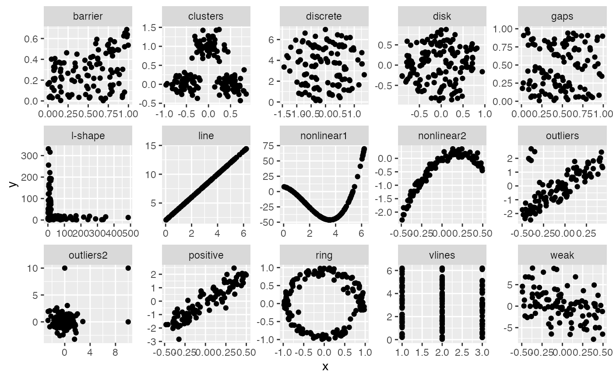

Compute convex scagnostic measures
sc_skinny(x, y)
# S3 method for scree
sc_skinny(x, y = NULL)
# S3 method for default
sc_skinny(x, y)
# S3 method for list
sc_skinny(ahull) require(ggplot2)
require(tidyr)
require(dplyr)
data(anscombe_tidy)
anscombe_tidy <- anscombe %>%
pivot_longer(cols = everything(),
names_to = c(".value", "set"),
names_pattern = "(.)(.)")
ggplot(anscombe_tidy, aes(x=x, y=y)) +
geom_point() +
facet_wrap(~set, ncol=2, scales = "free")

a_s <- scree(anscombe$x1, anscombe$y1)
sc_skinny(a_s)
#> [1] 0.3616838
a_s <- scree(anscombe$x2, anscombe$y2)
sc_skinny(a_s)
#> [1] 0.4416274
a_s <- scree(anscombe$x3, anscombe$y3)
sc_skinny(a_s)
#> [1] 0.5229884
a_s <- scree(anscombe$x4, anscombe$y4)
#> Warning: success: collinearities reduced through jitter
#> Warning: dataset started with 3 colinear points, jitter added!
sc_skinny(a_s)
#> [1] 0.4616928